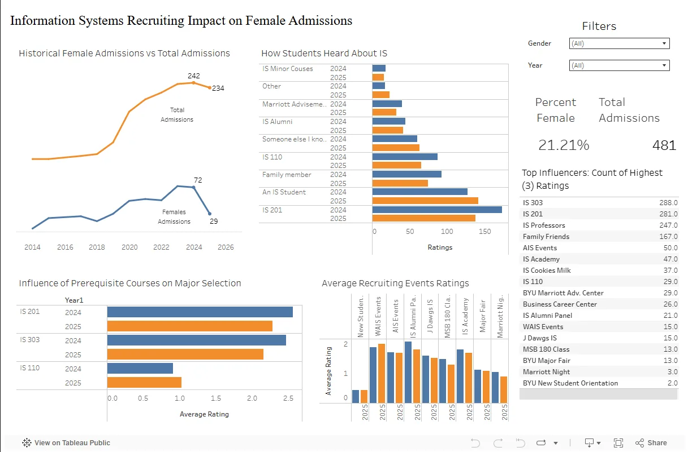

Higher Education Analytics · Tableau · Data Storytelling
Female IS Admissions Dashboard
An exploratory Tableau dashboard analyzing factors that may affect female application rates to BYU's Information Systems program, built to support faculty discussion and outreach strategy.

Problem
The Information Systems program wanted to better understand patterns that could influence female application rates. The challenge was to turn a broad question into a dashboard that could help faculty explore trends and discuss targeted outreach.
The dashboard is exploratory by design. It does not claim a single causal answer; it organizes relevant signals so the audience can inspect patterns and ask better follow-up questions.
Approach
Exploratory Framing
Presented trends and possible factors without overstating causality.
Audience Fit
Designed the dashboard for program faculty who needed strategic insight, not a technical data dump.
Actionable Questions
Structured views around where outreach, messaging, or program awareness might be improved.
This project strengthened my ability to frame ambiguity honestly. A good dashboard should make the limits of the analysis clear while still helping stakeholders decide what to investigate next.
Dashboard